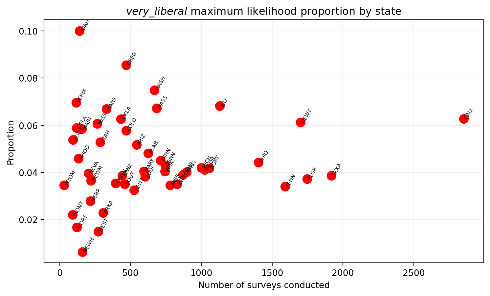
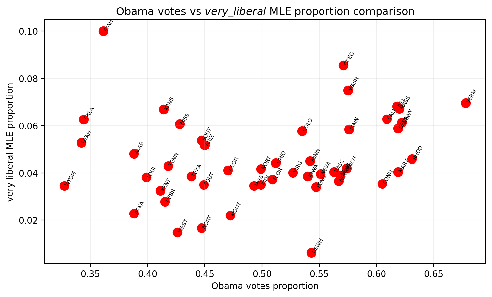
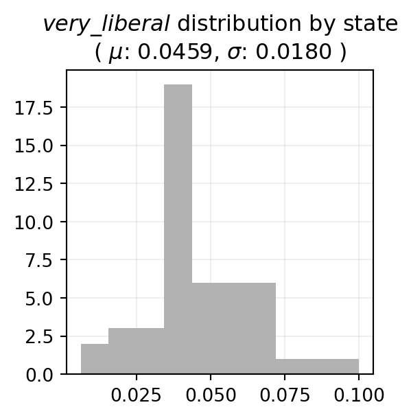
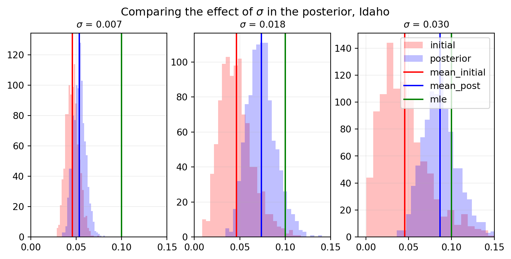
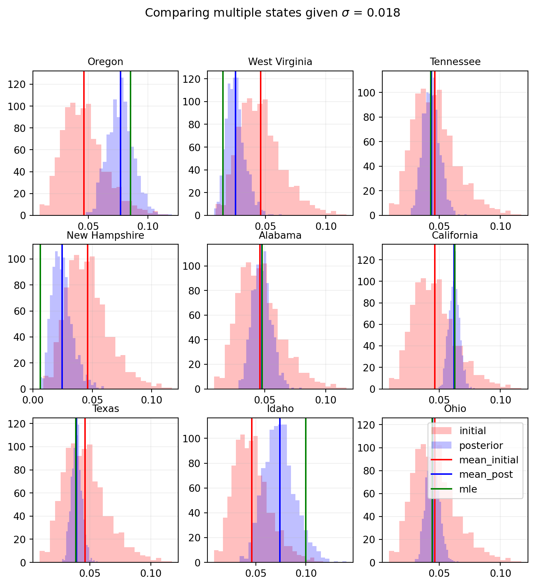
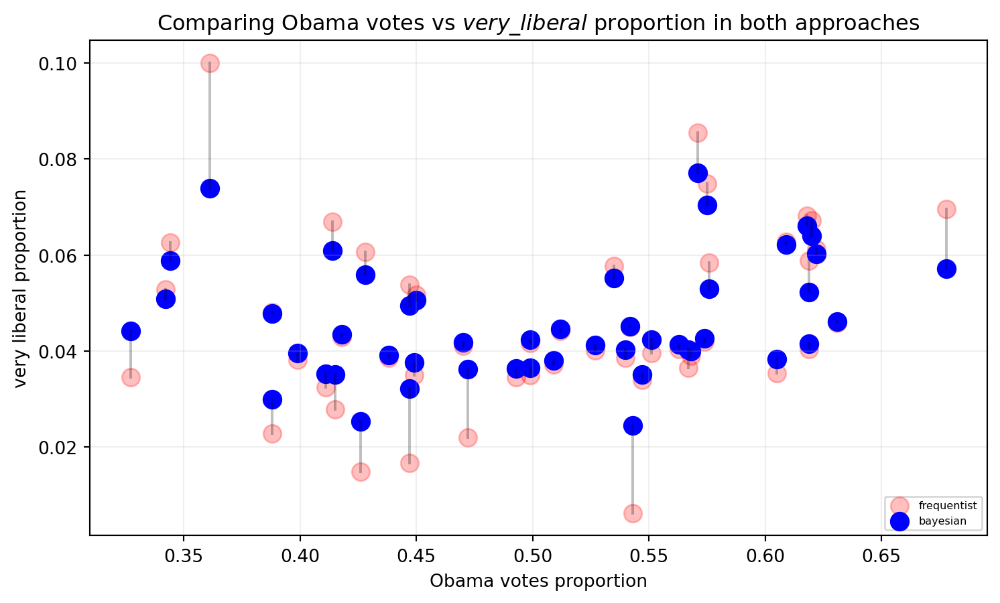

Code
import numpy as np
import pandas as pd
import matplotlib.pyplot as plt
from scipy.stats import beta
plot_settings = {'title':12, 'text':10, 'annotation':6, 'figsize':(9,5)}import numpy as np
import pandas as pd
import matplotlib.pyplot as plt
from scipy.stats import beta
plot_settings = {'title':12, 'text':10, 'annotation':6, 'figsize':(9,5)}By Miguel Ángel Castañeda Martínez.
When I started my journey as a data scientist, I had little knowledge of programming languages, machine learning models, exploratory data analysis, etc. Initially, I imagined that data analytics was more about systems, computational power, and algorithms, but I never imagined it had anything to do with statistics. To me, statistics was just another subject that had to be fulfilled in my degree, and I saw it as something archaic and even tedious. Little did I know that years later it would become one of my favorite topics, that I would find fascinating the immense world it encompasses, and that I would realize its vast range of applications.
In this brief essay, I aim to demonstrate, with an applied example, the differences between a frequentist approach and a Bayesian approach. It is worth noting that this is the opinion of someone who is starting to delve into the world of Bayesian statistics, who believes that the best way to assimilate knowledge is by sharing it, and who is therefore making an effort to convey their initial impressions and intuitions on the subject.
The example I will use to illustrate the concepts is based on survey data from the 2008 United States presidential election, which can be found on the Pew Research Center website. This example was extracted from the book Bayesian Data Analysis by Andrew Gelman, 3rd edition - p. 61, and it is an expansion of work done for the course Fundamentals of Statistics taught in the Master’s in Data Science program at ITAM, by someone who quickly became one of the best professors I have had in my professional career, Teresa Ortiz.
As it is well known, the 2008 United States election was won by the presidential candidate from the Democratic Party, Barack Obama. One might think that there is a certain correlation between the proportion of votes Obama received and the proportion of voters who identify as liberals in each state. To illustrate both approaches, a comparison will be made between the proportion of the population in each state that holds a “very liberal” political ideology (hereinafter referred to as “very liberal”), and the percentage of votes the candidate received in each state.
To make this comparison, we have two datasets. The first dataset consists of surveys conducted among the country’s citizens, where each record represents a surveyed person. The following variables are of interest:
state: The state where the survey was conducted.survey: An identifier for the survey applied to each record.ideo: The political ideology of the survey respondent.The second dataset contains the election results by state, with the focus on the following variables:
state: The reference state.vote_Obama_pct: The percentage of votes for Obama.For the first part of the analysis, we will obtain the proportion of the population that identifies as “very liberal” using a frequentist approach. In other words, we can obtain the maximum likelihood proportion using a binomial distribution. To do this, we can view each of the \(n\) respondents from a particular state \(X = \{x_1, x_2, ..., x_n\}\) as \(n\) samples from an independent and identically distributed random variable, following a distribution \(x_i \sim B(k=1, p=\theta)\), where a person with such an ideology is considered a success in a binomial setting.
The maximum likelihood estimator for a binomial distribution with \(k=1\) is given by:
\[\theta = \bar x\]
In the case of the example, we can obtain this estimator of proportion (prop_mle) by using the total number of surveys conducted in a state (survey_total) and the total number of respondents who identified as “very liberal” (survey_very_lib) in their political ideology. This is further illustrated in the following table, which only shows the first five states for simplicity.
The demonstration of the estimator \(\theta\) can be found in Annex 1.
#Carga de datos de encuestas
poll_data = pd.read_stata('../data/pew_research_center_june_elect_wknd_data.dta')
#Paso 1: Se agrupa por estado para obtener el número de encuestas realizadas en cada estada
state = poll_data.groupby(by='state').count()
state.reset_index(inplace=True)
state = state[['state', 'survey']]
#Paso 2: Se agrupa por estado e ideología para filtrar encuestas very liberal
ideo = poll_data.groupby(by=['state','ideo']).count()
ideo.reset_index(inplace=True)
ideo = ideo[['state', 'ideo', 'survey']]
very_liberal = ideo.loc[ideo['ideo'] == 'very liberal']
#Paso 3: Se unen los dos conjuntos anteriores
prop = pd.merge(left=state,
right=very_liberal,
how='left',
on='state',
suffixes=('_total','_very_lib'))
#Paso 4: Se crea obtiene la proporción de very libera de máxima verosimilitud por estado
prop['prop_mle'] = prop['survey_very_lib'] / prop['survey_total']
#Paso 5: Se eliminan estados que no son de interés
prop = prop[~prop['state'].isin(['washington dc', 'hawaii', 'alaska'])]
prop.head()| state | survey_total | ideo | survey_very_lib | prop_mle | |
|---|---|---|---|---|---|
| 0 | alabama | 624 | very liberal | 30 | 0.048077 |
| 1 | arizona | 542 | very liberal | 28 | 0.051661 |
| 2 | arkansas | 307 | very liberal | 7 | 0.022801 |
| 3 | california | 2854 | very liberal | 179 | 0.062719 |
| 4 | colorado | 468 | very liberal | 27 | 0.057692 |
Some key points to highlight from the above table are that, although some states may have the same proportion of “very liberal” individuals, it does not necessarily represent a significant number of voters as this depends on the population of each state. This is the case with California compared to Colorado, where they have similar proportions at \(6.3\%\) and \(5.8\%\) respectively, but California has a much larger number of surveys conducted overall.
To get an idea of the distribution of the “very liberal” proportion compared to the number of surveys for each state, the following visualization can be created:
#Scatter plot
plt.figure(figsize=plot_settings['figsize'])
plt.scatter(x=prop['survey_total'], y=prop['prop_mle'], s=100, color='red')
#Anotaciones y estilo
for idx in prop.index:
x = prop.loc[idx]['survey_total']
y = prop.loc[idx]['prop_mle']
s = prop.loc[idx]['state'].upper().replace(' ', '')[0:4]
plt.text(x=x, y=y, s=s, fontsize=plot_settings['annotation'], rotation=60)
plt.title(r'$very\_liberal$ maximum likelihood proportion by state', fontsize=plot_settings['title'])
plt.xlabel('Number of surveys conducted', fontsize=plot_settings['text'])
plt.ylabel('Proportion', fontsize=plot_settings['text'])
plt.grid(alpha=0.2)
plt.show()
It can be observed that the maximum likelihood proportion of individuals with a “very liberal” ideology does not increase linearly with the population size. In fact, upon careful observation, it can be identified that states like California, New York, or Texas, where a larger number of surveys were conducted, tend to be centered around a proportion of \(5\%\). This is in contrast to states where fewer than 500 surveys were conducted, which exhibit greater dispersion among themselves, resulting in a graph that tends to resemble a cone opening up as the number of surveys decreases but converging as the number of surveys increases.
This provides an initial intuition from a frequentist perspective, suggesting that with larger sample sizes, there is greater convergence towards the true population value. In the case of the proportion of “very liberal” individuals, one could think of each state as a representation of the overall behavior of the entire country. Therefore, if the proportion of individuals with this ideology in the country is \(5\%\), then different states should have proportions centered around this value with a certain variance.
Now, a visual inspection can be performed to explore the behavior of the proportion of “very liberal” individuals in contrast to the percentage of votes received by Obama. To do this, it is necessary to revisit the initial idea of the essay, which suggests a correlation between the proportion of votes received by Obama and the proportion of voters who identify as liberals in each state. The following graph can be created for this purpose:
#Carga de datos de las elecciones
results = pd.read_csv('../data/2008ElectionResult.csv')
#Paso 1: Descartar estados que no son de interés
results = results[~results['state'].isin(['District of Columbia', 'Hawaii', 'Alaska'])]
#Paso 2: Formatear el nombre de los estados para compatibilidad
results['state'] = results['state'].str.lower()
#Paso 3: Se incorpora la información al conjunto de datos
prop = pd.merge(left=prop,
right=results[['state', 'vote_Obama_pct']],
how='left',
on='state')
#Graficando votos por Obama contra proporción very liberal
plt.figure(figsize=plot_settings['figsize'])
plt.scatter(x=prop['vote_Obama_pct']/100, y=prop['prop_mle'], color='red', s=100)
#Anotaciones y estilo
for idx in prop.index:
x = prop.loc[idx]['vote_Obama_pct']/100
y = prop.loc[idx]['prop_mle']
s = prop.loc[idx]['state'].upper().replace(' ', '')[0:4]
plt.text(x=x, y=y, s=s, fontsize=plot_settings['annotation'], rotation=60)
plt.title(r'Obama votes vs $very\_liberal$ MLE proportion comparison', fontsize=plot_settings['title'])
plt.xlabel('Obama votes proportion', fontsize=plot_settings['text'])
plt.ylabel('very liberal MLE proportion', fontsize=plot_settings['text'])
plt.grid(alpha=0.2)
plt.show()
Before discussing the interesting aspects of the previous visualization in detail, it is important to clarify that if there were a correlation between these two variables under this approach, one would expect to see an upward trend towards the top right, indicating that a higher percentage of votes for Obama corresponds to a higher percentage of “very liberal” individuals. However, as evident from the graph, this is not the case.
With that being said, two distinct regions can be clearly identified when using a reference of \(50\%\) of votes for Obama. Approximately, from this threshold onwards, there is an increasing trend in the votes received by the candidate. However, in states below this reference, the trend is the opposite.
Additionally, there are states that completely defy the apparent trends in these regions. This is particularly evident in states like Idaho, which has the highest proportion of “very liberal” individuals but received less than \(37\%\) of votes for Obama in the election. On the other hand, states like New Hampshire have the lowest proportion of “very liberal” individuals, yet had almost \(55\%\) of voters supporting the candidate.
Having discussed the frequentist approach, it is now time to focus on the same analysis from a Bayesian point of view. However, before delving into the problem, it is necessary to start with two fundamental ideas.
The first idea is that a Bayesian approach leverages two sources of information. One source is the knowledge we have about the problem. An everyday example is when deciding whether to bring an umbrella when leaving the house or not. How do we make such a decision? We might look at the sky and evaluate whether it is cloudy or sunny, and based on that, make assumptions about whether it will rain or not. Regardless of the case, a decision has to be made based on the assumptions we have about the problem. This source of information is known as the prior.
Another source is the information extracted from the data we have about the problem. In the example of rain, if we have meteorological data indicating that we are in the rainy season and that it is forecasted to rain at a specific time, then it is most likely going to rain. At this point, the two approaches converge, as this source of information is the maximum likelihood seen in the previous section.
The second idea is that in the Bayesian world, the final or posterior knowledge will be an intermediate point between the two aforementioned sources of information, i.e., the prior and the likelihood. Depending on the relevance of each source, the posterior knowledge will lean more towards one or the other.
Knowing this, the natural question then arises: how is the relevance of the information controlled? As with most analytics problems, the answer depends on the context of the problem:
To illustrate this, let’s revisit the Obama problem, specifically using the conjugate binomial-beta family. This family has the property that, for an initial beta-distributed knowledge of a binomial-distributed phenomenon, the posterior knowledge is also beta-distributed but with adjusted parameters (the equations for these new parameters are shown in Appendix 2). It should be noted that, for this initial comparison, using a conjugate family is strictly for illustrative purposes. Formally, a hierarchical model should be used. With that said, we can visualize the distribution of individuals with a “very liberal” ideology obtained using a frequentist approach.
m = prop['prop_mle'].mean()
s2 = prop['prop_mle'].var()
fig, ax = plt.subplots(figsize=(3,3))
plt.hist(x=prop['prop_mle'], color='grey', alpha=0.6)
plt.title(f"$very\_liberal$ distribution by state\n( $\mu$: {m:.4f}, $\sigma$: {np.sqrt(s2):.4f} )", fontsize=plot_settings['title'])
plt.grid(alpha=0.2)
plt.show()
In this case, what is observed is that the distribution of individuals in each state who identify as “very liberal” under a frequentist approach has a mean of \(\mu \approx 0.045\) and standard deviation of \(\sigma \approx 0.018\). We can revisit the intuition from the previous section, where each state is a representation of the general behavior of the entire country, with the overall behavior centered around \(\mu = 0.0459\).
The idea that each state varies to a greater or lesser extent from a central value represents the prior knowledge. The relevance of the prior needs to be defined. In this case, relevance is determined by the standard deviation of the data. The smaller the standard deviation, the greater the influence of the prior on the posterior, and vice versa. The effect of the relevance of the prior can be observed by comparing different values of \(\sigma\). For this purpose, we can arbitrarily choose a state (e.g., Idaho) and use the standard deviation from the previous graph as a reference, i.e., \(\sigma = 0.018\).
#Función para obtener parámetros de beta posterior
def get_beta_params(mu, var):
a = mu * (-mu**2 + mu - var) / var
b = (mu - 1) * (mu**2 - mu + var) / var
return [a, b]
#Parámetros de simulación
sims = 1_000
var_list = [0.007**2, s2, 0.03**2]
k = len(var_list)
#Parámetros de estado
state = prop.loc[9]['state']
n = prop.loc[9]['survey_total']
x = prop.loc[9]['survey_very_lib']
#Parámetros de figura
fig = plt.figure(figsize=(9,4))
spec = plt.GridSpec(ncols=k, nrows=1, hspace=0.3)
ticks = np.arange(0, 0.18, 0.05)
for idx in range(k):
#Parámetros de beta
a, b = get_beta_params(m, var_list[idx])
#Distribución inicial
inicial = beta.rvs(a=a, b=b, size=sims, random_state=202803)
inicial_mean = inicial.mean()
#Distribución posterior
posterior = beta.rvs(a=(a+x), b=(b+n-x), size=sims, random_state=202803)
#Gráficas
ax_n = f"ax{idx}"
ax_n = fig.add_subplot(spec[idx])
ax_n.hist(x=inicial, bins=25, color='red', alpha=0.25, label='initial')
ax_n.hist(x=posterior, bins=25, color='blue', alpha=0.25, label='posterior')
ax_n.axvline(x=inicial.mean(), color='red', label='mean_initial')
ax_n.axvline(x=posterior.mean(), color='blue', label='mean_post')
ax_n.axvline(x=prop.loc[9]['prop_mle'], color='green', label='mle')
#Anotaciones y estilo
ax_n.set_title(f"$\sigma$ = {np.sqrt(var_list[idx]):.3f}", fontsize=plot_settings['text'])
ax_n.set_xlim(right=ticks.max())
ax_n.set_xticks(ticks)
ax_n.grid(alpha=0.2)
#Anotaciones generales
plt.suptitle(f"Comparing the effect of $\sigma$ in the posterior, {state.title()}", fontsize=plot_settings['title'])
plt.legend()
plt.show()
From the previous visualization, it is important to highlight that, for all the graphs in the panel, both the maximum likelihood proportion (green line) and the mean of the prior (red line) take the same values. However, it is observed that the prior indeed has a greater influence on the posterior as the standard deviation decreases. This is evident in both the position and dispersion of the posterior:
Now that we understand the logic behind the Bayesian approach applied to a single state, let’s go back to the reference value of \(\sigma=0.018\) and visualize the behavior of all the states. To do this, we can first describe 9 states of interest.
#Parámetros de beta
a, b = get_beta_params(m, s2)
#Parámetros de simulación
sims = 1_000
inicial = beta.rvs(a=a, b=b, size=sims, random_state=202803)
inicial_mean = inicial.mean()
#Parámetros de panel
panels = 3
states_idx = [34,45,39,26,0,3,40,9,32]
#Parámetros de figura
fig = plt.figure(figsize=(9,9))
spec = plt.GridSpec(ncols=panels, nrows=panels)
k = 0
for idx in states_idx:
state = prop.loc[idx]['state']
#Cálculo de la posterior
n = prop.loc[idx]['survey_total']
x = prop.loc[idx]['survey_very_lib']
posterior = beta.rvs(a=(a+x), b=(b+n-x), size=sims, random_state=202803)
#Gráficas
ax_n = f"ax{k}"
ax_n = fig.add_subplot(spec[k])
ax_n.hist(x=inicial, bins=25, color='red', alpha=0.25, label='initial')
ax_n.hist(x=posterior, bins=25, color='blue', alpha=0.25, label='posterior')
ax_n.axvline(x=inicial.mean(), color='red', label='mean_initial')
ax_n.axvline(x=posterior.mean(), color='blue', label='mean_post')
ax_n.axvline(x=prop.loc[idx]['prop_mle'], color='green', label='mle')
#Anotaciones y estilo
ax_n.set_title(state.title(), fontsize=plot_settings['text'])
ax_n.grid(alpha=0.2)
k += 1
#Anotaciones generales.
plt.suptitle(f"Comparing multiple states given $\sigma$ = {np.sqrt(s2):.3f}", fontsize=plot_settings['title'])
plt.legend()
plt.show()
The relevance of the previous panel lies in the clear visualization of the effect of the prior, which starts out the same for all states. By considering it in this way, we are modeling the average behavior of the country across each state. However, since we modeled the likelihood of each state independently, it can be seen that the posterior of each state exhibits different behaviors depending on various possible factors. Taking the mean of the likelihood as a reference (green line), we can observe the following:
Thus, once again, we visualize the proportion of votes that Obama received against the proportion of “very liberal” individuals by state, this time using both approaches.
#Se crea columna vacía en dataframe
prop['prop_bayes'] = np.nan
for idx in prop.index:
#Cálculo de la posterior
n = prop.loc[idx]['survey_total']
x = prop.loc[idx]['survey_very_lib']
posterior_mean = beta.rvs(a=(a+x), b=(b+n-x), size=sims, random_state=202803).mean()
prop.loc[prop.index == idx, 'prop_bayes'] = posterior_mean
#Graficando desplazamientos
plt.figure(figsize=plot_settings['figsize'])
plt.scatter(x=prop['vote_Obama_pct']/100, y=prop['prop_mle'], color='red', s=100, label='frequentist', alpha=0.25)
plt.scatter(x=prop['vote_Obama_pct']/100, y=prop['prop_bayes'], color='blue', s=100, label='bayesian')
for idx in prop.index:
x = prop.loc[idx]['vote_Obama_pct']/100
y_mle = prop.loc[idx]['prop_mle']
y_bayes = prop.loc[idx]['prop_bayes']
plt.plot([x,x], [y_mle, y_bayes], color='black', alpha=0.25)
#Anotaciones y estilo
plt.title(r'Comparing Obama votes vs $very\_liberal$ proportion in both approaches', fontsize=plot_settings['title'])
plt.xlabel('Obama votes proportion', fontsize=plot_settings['text'])
plt.ylabel('very liberal proportion', fontsize=plot_settings['text'])
plt.legend(fontsize=plot_settings['annotation'], loc=4)
plt.grid(alpha=0.2)
plt.show()
The first thing to note is that under the Bayesian approach, the dispersion of the points is reduced, indicating a relatively more centered behavior around a reference value of \(\mu=0.045\). This makes sense since this approach initially considered the same proportion of “very liberal” individuals in all states. Additionally, it becomes evident once again that the states that experienced the most displacement were those with low representation in the surveys or those that were originally further away from the value of the prior. States that were above \(\mu\) moved downward, and those that were below moved upward.
With this simple example, it is possible to appreciate the differences between the two approaches. At the same time, one can also identify the enormous potential of a Bayesian approach, as it incorporates more information about a topic, not just the data. However, this property that can initially be seen as a virtue is also the weak point of the Bayesian world. If the prior information is incorrect or biased towards a particular opinion, it can lead to serious and biased errors. This is precisely the main criticism of Bayesian approaches.
Maximum likelihood of a binomial distribution (\(n=1\)):
Let \(X = \{x_1,x_2,...,x_n\}\) be samples from an independent and identically distributed random variable following a distribution \(x_i \sim B(k=1, p=\theta)\), where \(k\) is the number of repetitions of the experiment. Then:
Probability:
\[P(x_i|\theta)=\binom{1}{x_i}\theta^{x_i}(1-\theta)^{1-x_i}=\theta^{x_i}(1-\theta)^{1-x_i}\]
Likelihood:
\[L(\theta|X)=\prod_{i=1}^n P(x_i|\theta)=\prod_{i=1}^n\left[\theta^{x_i}(1-\theta)^{1-x_i}\right]\]
Log-likelihood:
\[ln[L(\theta|X)]=\sum_{i=1}^nln\left[\theta^{x_i}(1-\theta)^{1-x_i}\right]=ln\theta\sum x_i+ln(1-\theta)\sum(1-x_i)\]
Derivative equal to cero:
\[\frac{\partial}{\partial\theta}ln[L(\theta|X)]=\frac{1}{\theta}\sum x_i-\frac{1}{1-\theta}\sum(1-x_i)=0\]
\[(1-\theta)\sum x_i-\theta\sum(1-x_i)=0\]
\[\sum x_i - \theta n = 0\]
\[\therefore\theta=\frac{1}{n}\sum_{i=1}^n x_i=\bar x\]
Which means:
\[\theta=\bar x\]
Using the sympy module in Python for symbolic computation, the equations that solve the parameters \(a\) and \(b\) of a conjugate beta-binomial distribution given the values of \(\mu\) and \(\sigma\) were obtained.
from sympy import symbols, Eq, solve
from sympy.abc import mu, sigma
a, b, s2, m = symbols("a b sigma^2 mu")
equation_1 = Eq( a / (a+b), m )
equation_2 = Eq( a*b / ((a+b)**2 * (a + b + 1)), s2 )
solution = solve((equation_1, equation_2), (a, b))
equation_1\(\displaystyle \frac{a}{a + b} = \mu\)
equation_2\(\displaystyle \frac{a b}{\left(a + b\right)^{2} \left(a + b + 1\right)} = \sigma^{2}\)
print("Solution for 'a' parameter:\n")
solution[0][0]Solution for 'a' parameter:
\(\displaystyle \frac{\mu \left(- \mu^{2} + \mu - \sigma^{2}\right)}{\sigma^{2}}\)
print("Solution for 'b' parameter:\n")
solution[0][1]Solution for 'b' parameter:
\(\displaystyle \frac{\left(\mu - 1\right) \left(\mu^{2} - \mu + \sigma^{2}\right)}{\sigma^{2}}\)
Previous expresions can be porgrammed directily in a python function.